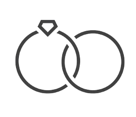
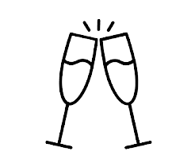
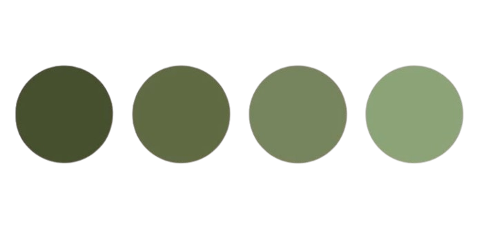

Faltan
para el gran día
Te compartimos los detalles de la celebración
17:30 HRS
Ceremonia Civil

18:30 HRS
Cocktail de Bienvenida

20:30 HRS
Cena
23:00 HRS
A bailar
DRESS CODE
Evita venir vestido de esta gama de colores

Leyre
Sergio
Confirmar asistencia
Tu navegador no soporta el reproductor de audio.